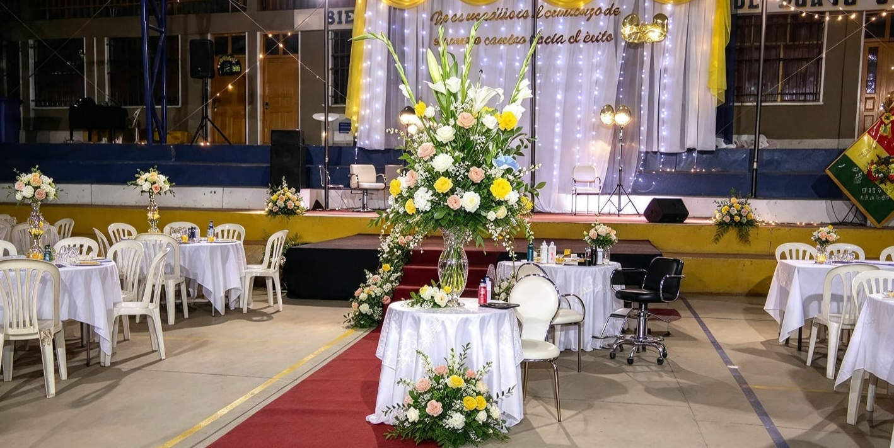

Bienvenido a nuestra Comunidad Educativa
La Unidad Educativa Andrés de Santa Cruz les da la bienvenida a su portal informativo oficial. Este espacio ha sido diseñado para mantener a toda nuestra comunidad al día con el desarrollo de nuestro año escolar. Aquí podrán consultar el calendario académico, nuestros eventos institucionales, y conocer que eventos se realizan en nuestra Unidad Educativa..
Explore nuestros eventos institucionales, conozca nuestra trayectoria histórica y manténgase informado sobre las actividades académicas y comunitarias.

Calendario Institucional
Navegue entre los meses utilizando las flechas para revisar las fechas y eventos institucionales programados.
Enero 2026
Actividades y Eventos
Filtre nuestras actividades por categoría para obtener información detallada:
Historia de la Unidad Educativa
La Unidad Educativa ¨Andrés de Santa Cruz¨ es una institución fiscal que pertenece al subsistema de Educación Regular y se encuentra ubicada en el barrio Villa Fátima, zona noroeste de la ciudad de Tupiza, en la provincia Sud Chichas del departamento de Potosí. Su creación responde a la necesidad de brindar educación de calidad a los niños, niñas y jóvenes de esta zona, que en los años noventa experimentaba un notable crecimiento poblacional. La unidad educativa fue fundada el 8 de marzo de 1993, fecha que marca el inicio oficial de sus actividades académicas. En sus primeros años, la institución funcionó con recursos limitados, en un pequeño ambiente adaptado, donde un grupo de docentes comprometidos y padres de familia entusiastas unieron esfuerzos para hacer realidad el sueño de contar con un colegio propio. Con el paso del tiempo, la unidad fue creciendo en infraestructura, mobiliario y número de estudiantes, gracias al apoyo de las autoridades educativas, del municipio y de la comunidad. El nombre de la institución rinde homenaje al Mariscal Andrés de Santa Cruz y Calahumana, destacado militar y político boliviano-peruano, símbolo de integración, disciplina y liderazgo. Este nombre fue elegido para reflejar los ideales de unión, fortaleza y trabajo por la patria, valores que hoy forman parte del espíritu institucional. A lo largo de sus 25 años de vida, la Unidad Educativa “Andrés de Santa Cruz” ha formado generaciones de estudiantes con una educación técnico humanística, basada en los principios de la Ley Avelino Siñani – Elizardo Pérez (Ley 070), que promueve una formación integral, inclusiva y comunitaria. El colegio se caracteriza por fomentar el desarrollo del pensamiento crítico, la práctica de valores, la responsabilidad social y el compromiso con el medio ambiente. Durante su trayectoria, la institución ha logrado importantes avances en los ámbitos académico, cultural, científico y deportivo, alcanzando reconocimientos locales, departamentales y nacionales. Los estudiantes han participado con éxito en olimpiadas científicas, ferias educativas, actividades cívicas y campeonatos intercolegiales, representando con orgullo a su institución y a la ciudad de Tupiza. La unidad educativa también ha apostado por la mejora constante de su infraestructura. Gracias a la colaboración del Gobierno Municipal, de los padres de familia y del plantel docente, se han construido nuevos ambientes, laboratorios, talleres y espacios recreativos que brindan mejores condiciones para el aprendizaje. De igual manera, se ha trabajado en la implementación de tecnologías y materiales pedagógicos modernos para fortalecer la calidad educativa. El personal docente ha sido siempre uno de los pilares fundamentales de la institución. Su dedicación y compromiso han permitido consolidar un proyecto educativo que combina la enseñanza científica con la formación en valores. El Centro de Estudiantes, por su parte, ha tenido un papel protagónico en la promoción de actividades que fortalecen la identidad institucional y la participación democrática. En el año 2018, la Unidad Educativa “Andrés de Santa Cruz” celebró con orgullo sus Bodas de Plata, recordando 25 años de esfuerzo, perseverancia y crecimiento. Este aniversario no solo significó una mirada al pasado, sino también un compromiso hacia el futuro: continuar formando hombres y mujeres capaces de transformar positivamente su entorno. La institución se ha consolidado como una de las más representativas de la ciudad de Tupiza. Su lema, su disciplina y su espíritu comunitario reflejan el compromiso con la educación boliviana y con la formación de nuevas generaciones de ciudadanos que contribuyan al desarrollo del país con conocimiento, identidad y valores. Misión Formar ciudadanos críticos, creativos y solidarios mediante una educación de calidad, inclusiva y ética. Promovemos competencias académicas junto a habilidades socioemocionales y responsabilidad ambiental. Valores - Responsabilidad - Respeto - Solidaridad - Creatividad - Compromiso social:
Ubicación de la Institución
Nos encontramos ubicados en el Municipio de Tupiza.